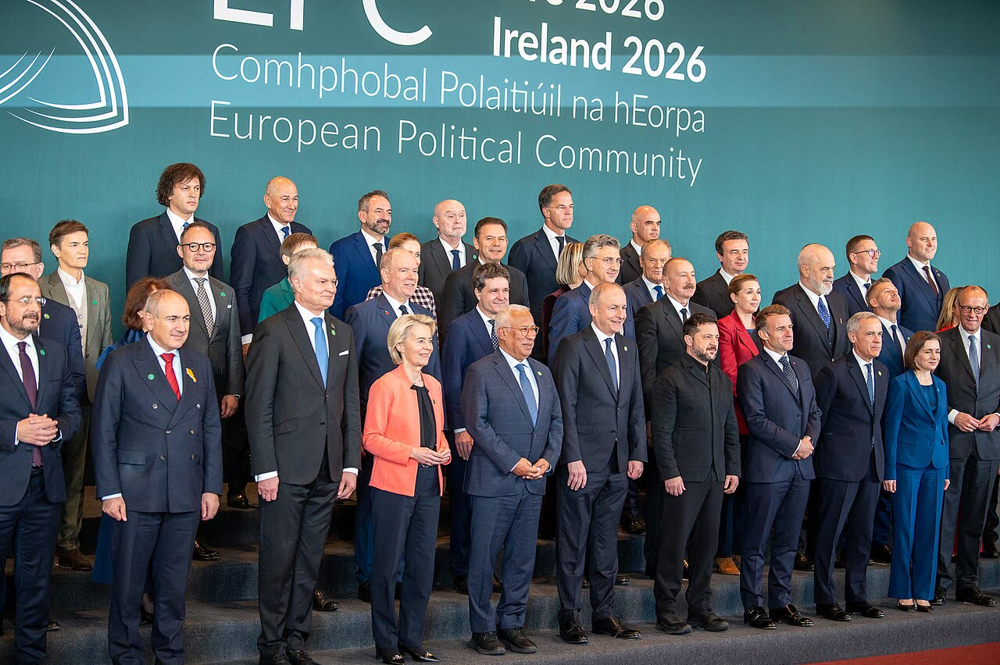

Europa al tavolo con Putin: il sì lo dice Witkoff, il Cremlino non conferma
Conta il mandato, non il nome, e lo scrivono i governi: l'Italia non voti i soldi del 2027 prima di sapere cosa si tratta, e con Mosca parli.
Redazione Contrappunto · aggiornato il 13.11.2026

.jpg){kind=link}
Stati Uniti, Russia e Ucraina trattano su come chiudere la guerra. L'ultimo incontro tra le delegazioni si è tenuto ad Abu Dhabi il 10 e 11 novembre, con gli europei presenti ma fuori dalla stanza; il 12 novembre gli inviati di Trump, Steve Witkoff e Jared Kushner, hanno visto Putin al Cremlino. L'Unione europea non ha mai deciso chi la rappresenta a quel tavolo. Il 5 novembre Giorgia Meloni ha scritto ad António Costa, presidente del Consiglio europeo, chiedendo di decidere chi siede per l'Ue e con quale mandato; i leader ne hanno parlato a Dublino il 12 e il 13 novembre. Conta perché chi siede al tavolo può impegnare soldi, sanzioni e garanzie di sicurezza che pagano anche gli italiani. Della lettera abbiamo scritto il 6 novembre; qui controlliamo cosa è stato raccontato dopo.
Vedi di più: 9 parole spiegate, cosa si racconta
Cosa si raccontaIl racconto che circola ha tre pezzi. Primo: Meloni chiede un inviato unico europeo (Euronews il 9 novembre, Adnkronos Eurofocus, La Notizia, askanews, AGI). Secondo: Putin ha accettato gli europei al prossimo round (il Moscow Times con Reuters, askanews, il Guardian che lo riporta da Kushner; ilpoliticoweb titola «Putin apre agli europei», La Notizia al contrario che Putin «chiude la porta all'Europa»). Terzo: l'Ue si è data due settimane per decidere (ANSA; per il Fatto Quotidiano è un «ultimatum»). Sul fondo tutti concordano: l'Europa è divisa su chi deve parlare per lei. [Euronews] [Adnkronos Eurofocus] [La Notizia] [La Voce d'Italia] [AGI] [The Moscow Times] [The Guardian] [ilpoliticoweb] [ANSA] [Il Fatto Quotidiano]
- E3
- Francia, Germania e Regno Unito: il gruppo che sull'Ucraina si coordina da solo, fuori dalle istituzioni dell'Ue. L'Italia non ne fa parte; a volte viene associata, con la Polonia (si parla allora di E5).
- Volenterosi
- La «coalizione dei volenterosi»: i paesi pronti a dare garanzie di sicurezza all'Ucraina dopo la guerra, anche con soldati. Ne fanno parte anche paesi fuori dall'Ue, come Regno Unito e Norvegia: per questo, dice Martin, la rappresentanza non può essere solo dell'Ue.
- Comunità politica europea e Consiglio europeo
- La Comunità politica europea è un forum di una quarantina di paesi europei, dentro e fuori l'Ue (c'erano anche Regno Unito e Ucraina): si è riunita a Dublino il 12 novembre e non prende decisioni vincolanti. Il Consiglio europeo riunisce i capi di governo dei 27 paesi dell'Ue, lo presiede António Costa e decide la linea politica dell'Unione; quello del 13 novembre è «informale» e non adotta conclusioni.
- Witkoff e Kushner
- Steve Witkoff è l'inviato speciale del presidente americano Donald Trump; Jared Kushner, genero di Trump, tratta con lui. Sono la parte americana dei negoziati: quando dicono che Putin accetta qualcosa, è la loro versione, non quella del Cremlino.
- Ushakov e Peskov
- Yury Ushakov è il consigliere di Putin per la politica estera, Dmitry Peskov il suo portavoce: parlano a nome del Cremlino.
- Cosa dicono i Trattati
- Il Trattato sull'Unione europea affida la rappresentanza esterna in politica estera e di sicurezza al presidente del Consiglio europeo (oggi Costa), al suo livello, e all'Alta rappresentante (oggi Kaja Kallas). In politica estera i governi decidono all'unanimità: ognuno ha il veto. È l'argomento di Costa, Kallas e Tusk: la regola c'è già.
- Mandato
- Le istruzioni date a chi tratta: cosa può chiedere, cosa può concedere, cosa può impegnare (soldi, sanzioni, garanzie). Il nome dice chi parla; il mandato dice per conto di chi e fino a dove. La lettera di Meloni chiede tutte e due le cose; nessuno, finora, ha detto cosa dovrebbe esserci nel mandato.
- Consiglio europeo straordinario del 26-27 novembre
- Un vertice dei 27 a Bruxelles convocato il 4 novembre. L'ordine del giorno provvisorio prevede il bilancio pluriennale dell'Ue e il finanziamento dell'Ucraina per il 2027; la rappresentanza ai negoziati non c'è, ma Martin vuole arrivarci con la questione risolta.
- Bozze russe del 2021
- Gli accordi sulle garanzie di sicurezza che la Russia presentò nel 2021 a Stati Uniti e NATO: niente allargamento della NATO, niente sistemi d'arma minacciosi vicino ai confini russi, forze dell'alleanza riportate a com'erano all'Atto fondatore NATO-Russia (1997).
- Che Putin accetti gli europei al tavolo lo dicono Witkoff e Kushner; il Cremlino chiede prima di scegliere tra pace e guerra e non conferma.
- La lettera di Meloni chiede chi siede per l'Ue e con quale mandato; il nome unico lo chiede Kushner.
- Le «due settimane» sono un auspicio di Martin: nell'ordine del giorno provvisorio del 26-27 novembre ci sono i soldi all'Ucraina, non la rappresentanza.
- [✓] La lettera del 5 novembre non chiede un inviato unico: chiede chi siede al tavolo per l'Ue e con quale mandato, da decidere a dicembre. L'inviato unico era la richiesta di giugno.
- [✓] Il sì di Putin agli europei lo dicono Witkoff e Kushner, non il Cremlino: Putin chiede prima agli europei di scegliere tra pace e guerra, Ushakov non conferma.
- [✓] Le due settimane le dice il premier irlandese Martin, puntando al Consiglio del 26-27 novembre: nel suo ordine del giorno provvisorio ci sono bilancio e soldi all'Ucraina, non la rappresentanza.
- [✓] L'Europa è divisa: Merz difende l'E3, che lavora con Italia e Polonia; Costa, Kallas e Tusk le istituzioni dell'Ue; Martin vuole dentro i Volenterosi.
- [✓] Ad Abu Dhabi l'Italia c'era, fuori dalla stanza, con gli altri europei: nel pezzo del 6 novembre l'avevamo data per non verificabile.
Euronews ha scritto che Meloni chiede un inviato speciale europeo; Adnkronos Eurofocus un «inviato unico», AGI un «unico rappresentante». Nella lettera del 5 novembre non c'è: c'è la richiesta di decidere «chi siede al tavolo negoziale in rappresentanza dell'Unione europea, e con quale mandato». Il nome unico lo chiede piuttosto Kushner: l'11 novembre ha detto che un solo portavoce europeo varrebbe più dell'ingresso al tavolo. A Dublino Meloni ha detto di non avere «alcuna contrarietà» a Costa. [23] [3] [26] [1] [2] [21]
Secondo racconto: Putin ha detto sì agli europei. Lo dicono Witkoff e Kushner, e il Moscow Times con Reuters lo mette nel titolo. Putin ha detto altro: gli europei decidano se vogliono la pace o la guerra, poi la Russia è pronta a lavorare con loro. Ushakov non conferma. E Mosca li vuole al tavolo sulle sue bozze del 2021: niente NATO più a est, niente armi vicino ai confini russi, forze NATO riportate al 1997. Quasi nessuno lo scrive. [17] [5] [7]
Terzo: le «due settimane». Sono l'auspicio del premier irlandese Martin, che punta al Consiglio straordinario del 26-27 novembre; il Fatto lo chiama ultimatum. L'ordine del giorno provvisorio di quel vertice, del 4 novembre, prevede bilancio e soldi all'Ucraina per il 2027, non la rappresentanza. Può entrarci, ma nessun atto fissa una data. [10] [12] [8]
Le ragioni degli altri sono serie. Costa, Kallas e Tusk: la regola c'è già nei Trattati; detto con parole nostre, un'Europa che parla con le sue istituzioni pesa più di ventisette veti. Merz: l'E3, che lavora già con Italia e Polonia, funziona. Kallas e il premier estone Michal: l'architettura russa è una trappola. Su Meloni lo stesso metro: ha ragione nel merito, sul risultato per ora poco. [21] [25] [22] [26]
Il nostro punto. Conta cosa porta l'Europa e chi impegna soldi e sanzioni italiane. Il mandato lo scrivono i governi, all'unanimità, non un inviato di Bruxelles: il veto di ciascuno è una garanzia. Il rischio è votare il conto prima del nome: l'Italia non dia i soldi del 2027 senza sapere cosa si tratta. E con Mosca si parla, anche di sicurezza: un tavolo dove l'Europa paga e non conta è il peggiore per noi.
La verifica punto per punto28 passaggi, 32 fonti
Qui sotto ogni cosa scritta sopra, una per una, con le fonti. Confermato: lo dice un documento originale o più fonti lette. Plausibile: lo riportano fonti serie, ma non abbiamo letto l'originale. Discordante: le fonti danno numeri diversi, e diciamo quali. Ipotesi e Opinione sono il nostro ragionamento, separato dai fatti.
Cosa ha chiesto Meloni · la lettera del 5 novembre
La lettera di Meloni a Costa è del 5 novembre, non del 6. Chiede di decidere «una volta per tutte» chi siede al tavolo per l'Ue e con quale mandato: discussione a Dublino, decisione al Consiglio europeo di dicembre.
Per l'Italia non chiede niente: «non chiedo questo ruolo né per me né per l'Italia». Rifiuta impegni presi da altri senza mandato.
L'«inviato unico» · da dove viene
Nei due testi della lettera (Adnkronos, Avvenire) non ci sono «inviato» come sostantivo, «unico» né «negoziatore». L'inviato unico era la richiesta del 17 giugno.
Euronews («demanding the appointment of a special European envoy»), Adnkronos Eurofocus («inviato unico»), La Notizia, askanews e AGI attribuiscono alla lettera un inviato unico. Contestato, non smentito: Meloni lo chiedeva a giugno, e la lettera vuole «una voce sola».
Il nome unico lo chiede Kushner. Mercoledì 11 novembre: «If Europe could identify one person to speak on their behalf, that would be a bigger achievement than getting the Russians to include them in the negotiations». Adnkronos il 13 la riporta senza data.
Cosa ha chiesto Meloni · la lettera del 5 novembre
Il 12 novembre Meloni ha ripetuto: «Abbiamo bisogno di individuare chi può rappresentare gli interessi dell'Europa e con quale mandato». La lettera elenca i formati: Miami, Oslo, la telefonata Stubb-Støre a Putin, i Volenterosi a Berlino, il «formato Berlino», Bruxelles, Abu Dhabi.
Costa ha risposto il 5 novembre: ne parlerà a Dublino, ma l'Ue la rappresentano le sue istituzioni, secondo i Trattati.
Chi decide e quando · le «due settimane»
A Dublino, il 13 novembre, se ne discute su richiesta di Meloni; un Consiglio informale non adotta conclusioni. Esito non noto a mezzogiorno.
«Entro una o due settimane» lo dice Martin, premier irlandese e presidente di turno: «c'è ancora del lavoro da fare da qui al Consiglio straordinario tra due settimane». L'ordine del giorno provvisorio di quel Consiglio, del 4 novembre, prevede bilancio e «Ukraine – financing for 2027», non la rappresentanza.
L'Europa divisa · regge
Martin: non solo Ue, perché i Volenterosi includono Regno Unito e Norvegia; non per forza una persona; «in una forma o nell'altra» una componente E3 (solo ANSA).
Kallas: i Trattati affidano la rappresentanza a Costa e a lei. Costa: per ogni questione «abbiamo la persona giusta per parlare a nome dell'Europa». Il premier polacco Tusk: solo le istituzioni. Il premier ceco Babiš propone anche altri nomi, Meloni compresa.
L'Italia non è nel nucleo E3 (Francia, Germania, Regno Unito) e il 4-5 novembre a Bruxelles non c'era. Merz difende l'E3, «formato collaudato», che lavora anche con Italia e Polonia (il formato E5).
Il Cremlino · un sì che non c'è
Witkoff: dopo l'incontro con Putin del 12 novembre è fissato un nuovo incontro a tre, con gli europei, senza data né sede. Davanti a Putin diceva «hopefully».
Che Putin abbia accettato gli europei lo dicono americani e ucraini. Putin chiede agli europei di decidere tra pace e guerra, poi si dice pronto a lavorare con loro: un'apertura condizionata.
Ushakov non conferma: gli europei vogliono entrare a ogni costo, ma prima scelgano tra pace e guerra. Il 6 novembre Peskov diceva che non hanno ancora deciso chi parla per loro.
Mosca vuole gli europei sulla sua architettura di sicurezza: le bozze di accordo del 2021 a Stati Uniti e NATO, cioè niente allargamento della NATO, niente armi minacciose vicino ai confini russi, forze NATO come all'Atto fondatore del 1997. Kallas e Michal la chiamano trappola.
Putin: truppe europee in Ucraina dopo la pace sarebbero un «obiettivo legittimo». La «recipe for an endless war» di Ushakov riguarda quei contingenti (il Moscow Times la allarga).
Abu Dhabi · correggiamo il 6 novembre
Ad Abu Dhabi, il 10-11 novembre, c'erano l'Italia, E3, squadra Ue e NATO: sette, fuori dalla stanza. Il 6 novembre l'avevamo dato non verificabile.
Kiev e il vertice di Dublino
Zelensky: al prossimo incontro l'Europa sarà nella squadra negoziale, e decida chi la rappresenta entro fine mese (la scadenza la riporta solo Euronews).
Al saluto Zelensky dice a Meloni «Tu non volevi...» per ANSA, «Non lo hai voluto tu» per HuffPost.
Chi paga · i soldi del 2027
Il 26-27 novembre si discutono i soldi all'Ucraina per il 2027, senza cifre ufficiali; il Fatto scrive 45 miliardi (non verificato). Merz, per Euronews, minaccia il veto sul bilancio.
Tra le righe
La partita vera è tra formati ristretti (E3, E5) e istituzioni: la mossa italiana porta la rappresentanza dove l'Italia siede di diritto, non su invito.
Ragionamento: Merz difende l'E3 e il formato E5, dove l'Italia entra con la Polonia quando la si chiama; Martin prevede una componente E3; il 4-5 novembre a Bruxelles l'Italia non c'era; Meloni parla di «troppi formati» e accetta Costa, cioè un'istituzione dove l'Italia siede di diritto. Nessuno lo dice apertamente: fiducia media.
A dicembre niente nome unico: più probabile Costa e Kallas con una componente E3, all'Italia al massimo il raccordo sul mandato.
Ragionamento: Kallas e Costa citano i Trattati e gli accordi del 2024, Martin dice che non sarà per forza una persona e che l'E3 ci sarà, Meloni non si oppone a Costa. Nessuno, nelle fonti lette, propone un nome italiano.
Il mandato pesa più del nome: sanzioni e beni russi congelati si toccano solo con un mandato votato dai governi.
Ragionamento: Le leve europee (sanzioni, che si rinnovano all'unanimità, beni russi congelati, soldi a Kiev, garanzie di sicurezza) restano dei governi; chi siede senza poterle impegnare porta poco. Ma nessuna fonte letta dice cosa conterrà il mandato: per questo la fiducia è bassa.
La tesi più forte contro di noi
Le tesi più forti contro di noi: la regola c'è già nei Trattati (Costa, Kallas, Tusk), e (in parole nostre) un'Europa che parla con le sue istituzioni pesa più di ventisette veti; l'E3 con Italia e Polonia funziona già (Merz); discutere l'architettura del 2021 è una trappola (Kallas, Michal).
Il nostro punto
Stesso metro sul governo. Meloni ha ragione nel merito: niente impegni presi da altri senza mandato. Sul risultato, per ora poco: la discussione a Dublino, nessuna decisione, un sì a Costa, che i Trattati già prevedono.
Conta cosa porta l'Europa e chi impegna soldi e sanzioni italiane. Il mandato lo scrivono i governi, all'unanimità. E il conto non si decide prima del nome.
Con Mosca si parla, anche di sicurezza europea: un tavolo dove l'Europa paga e non conta è il peggiore per l'Italia.
Fonti32, tutte con il link
- Ucraina, l'appello di Meloni: "Ue parli con una sola voce, Italia non accetta impegni presi da altri" (Adnkronos) · consultata il 13.11.2026
- Meloni: improcrastinabile che Europa parli a una voce sola su Kiev (Avvenire) · consultata il 13.11.2026
- Ucraina, Meloni pressa sull'inviato unico e avverte l'Ue: "Così siamo irrilevanti" (Adnkronos Eurofocus) · consultata il 13.11.2026
- EU's Costa backs Meloni's criticism of peace talks 'disarray,' plans to fix it (The Kyiv Independent) · consultata il 13.11.2026
- Встреча со спецпосланником Президента США Стивеном Уиткоффом и Джаредом Кушнером (Presidenza della Federazione Russa (kremlin.ru)) · consultata il 13.11.2026
- Meeting with US President's Special Envoy Steve Witkoff and Jared Kushner (traduzione inglese parziale, «To be continued») (President of Russia (en.kremlin.ru)) · consultata il 13.11.2026
- Presidential Aide Yury Ushakov's commentary following a meeting between Vladimir Putin, US President's Special Envoy Steve Witkoff and Jared Kushner (President of Russia (en.kremlin.ru)) · consultata il 13.11.2026
- Special meeting of the European Council, 26 and 27 November 2026: notice of meeting and provisional agenda (CM 8/26) (Consiglio europeo) · consultata il 13.11.2026
- Notizie da Palazzo Chigi (elenco: Consiglio europeo informale di Dublino; Formato di Berlino e Zelensky; Burnham; dichiarazione sull'immigrazione) (Governo italiano) · consultata il 13.11.2026
- Presidenza Ue, decidere entro due settimane chi rappresenta l'Europa su Ucraina (ANSA) · consultata il 13.11.2026
- 'E' tanto che non ci vediamo'. 'Tu non volevi...'. La battuta di Zelensky con Meloni (ANSA) · consultata il 13.11.2026
- Ucraina, Martin: «Due settimane per scegliere il rappresentante Ue» (Il Fatto Quotidiano) · consultata il 13.11.2026
- Meloni a Zelensky: "Non ti vedevo da un po'". Lui: "Non lo hai voluto tu". E lascia la frecciata nel video ufficiale (HuffPost Italia) · consultata il 13.11.2026
- New round of trilateral negotiations agreed upon after Putin-Witkoff meeting (TASS) · consultata il 13.11.2026
- Next round of talks on Ukraine already scheduled — Witkoff (TASS) · consultata il 13.11.2026
- After meeting with Putin, Witkoff says new round of peace talks agreed, with European representatives set to participate (Meduza) · consultata il 13.11.2026
- Putin Agrees for Europe to Join Ukraine Peace Talks, Witkoff Says (Reuters) (The Moscow Times) · consultata il 13.11.2026
- Next meeting of negotiating teams already scheduled – Witkoff (Ukrinform) · consultata il 13.11.2026
- Trump, Putin to discuss Ukraine peace settlement during meeting in China, Kremlin says (The Kyiv Independent) · consultata il 13.11.2026
- In Moscow, Witkoff and Kushner Ask Putin to Include Europe in Peace Talks (The New York Times) · consultata il 13.11.2026
- Leaders meet in Dublin amid search for lead EU negotiator for peace talks with Russia - Europe live (The Guardian) · consultata il 13.11.2026
- Ukraine envoy row hijacks EU leaders' first AI summit (Euronews) · consultata il 13.11.2026
- EU to send joint team to Ukraine-Russia talks in Abu Dhabi (Euronews) · consultata il 13.11.2026
- EU sends team to Abu Dhabi Ukraine talks without a seat at the table (Brussels Signal) · consultata il 13.11.2026
- Ucraina-Russia, Ue sceglie chi deve parlare con Putin: Kiev pressa, Trump perde la pazienza (Adnkronos) · consultata il 13.11.2026
- Resta irrisolto il rebus del negoziatore Ue per l'Ucraina (AGI) · consultata il 13.11.2026
- Ucraina, Europa a nuovo round colloqui. Meloni: parli con voce sola. Gelo da Merz-Macron (askanews) (La Voce d'Italia) · consultata il 13.11.2026
- Ucraina, gli inviati di Trump promettono l'Europa al tavolo: il Cremlino chiede prima un rappresentante unico (Notizie Geopolitiche) · consultata il 13.11.2026
- Putin apre agli europei al tavolo e promette lo scambio di prigionieri più grande della guerra (ilpoliticoweb) · consultata il 13.11.2026
- Ucraina, Meloni a Dublino cerca un posto a tavola (La Notizia) · consultata il 13.11.2026
- Kremlin accuses Europe of struggling to decide who will speak for it at future Ukraine talks (Cyprus Mail (Reuters)) · consultata il 13.11.2026
- Meloni a Costa: l'Ue decida chi tratta sull'Ucraina, e con quale mandato (nostro pezzo) (Contrappunto) · consultata il 13.11.2026